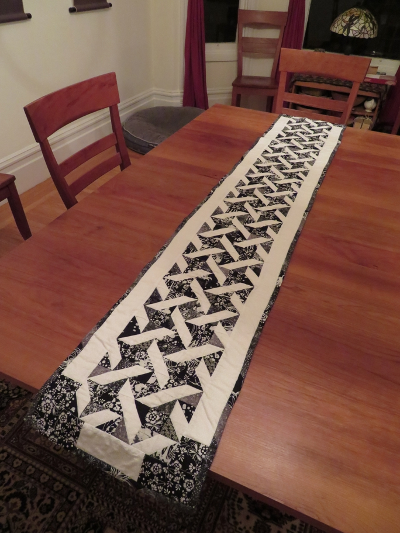

All the others were ideas I initiated. The color choice for this was the recipient's but the pattern choice was mine. The basic block is called Friendship Star because of the four pointed star, but this is a variant because the corner blocks are made of two triangles rather than the basic square of fabric.